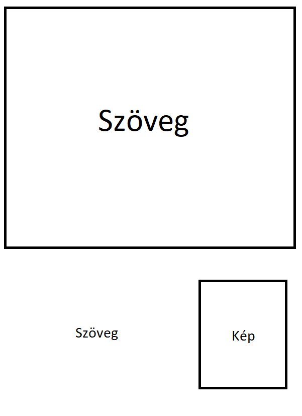
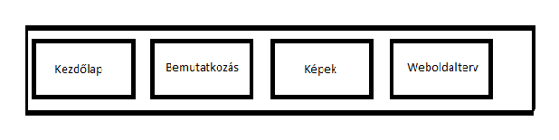
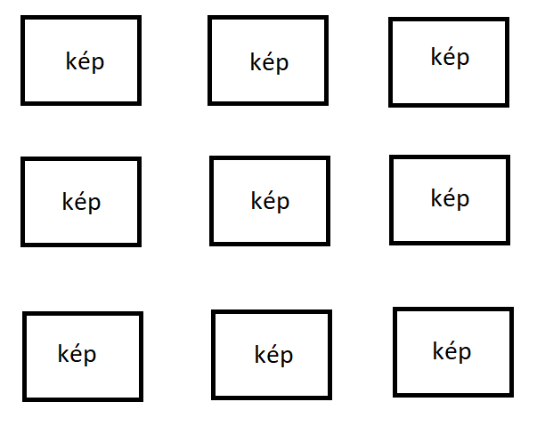

A weboldalam tervezésekor törekedtem az egyszerű, letisztult színek és formák használatára.

A főoldal létrehozásakor a cím alatt egy képet helyeztem el háttérként. Ez alá került egy rövid bemutatkozó szöveg, mellé pedig egy kép magamról. A képnél alkalmazott "megfordulás" programozása jelentett némi problémát, de végül sikerült megoldanom.
A menüsáv a lap tetején bal oldalra pozicionálva jelenik meg, a háttere végigfut a lap teljes szélességében.
A képek elhelyezését is a letisztultság jellemzi, 3x3-as táblázatban helyeztem el őket. Az elsötétedés effekttel próbáltam feldobni egy kicsit az aznos méretű képek sorát.
Kihívást jelentett:
-képek elrendezése és megfelelő méretezése
-a "megfordulás" effekt leprogramozása
Források:
-Google
-w3schools.com
-fonts.google.com